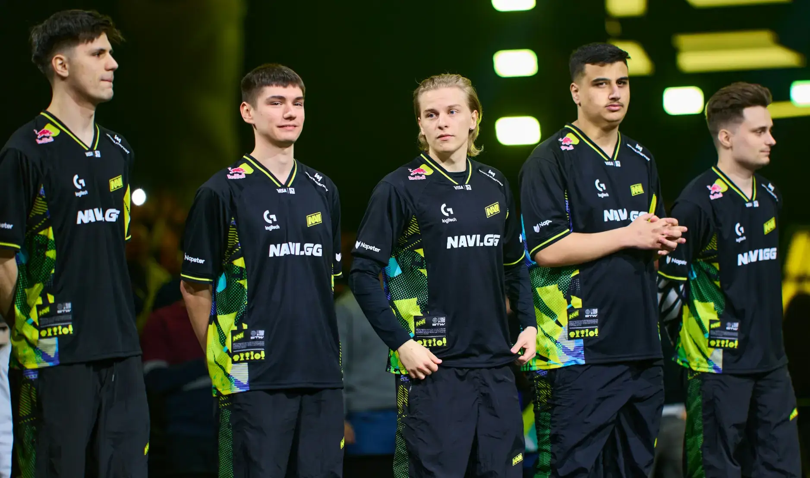
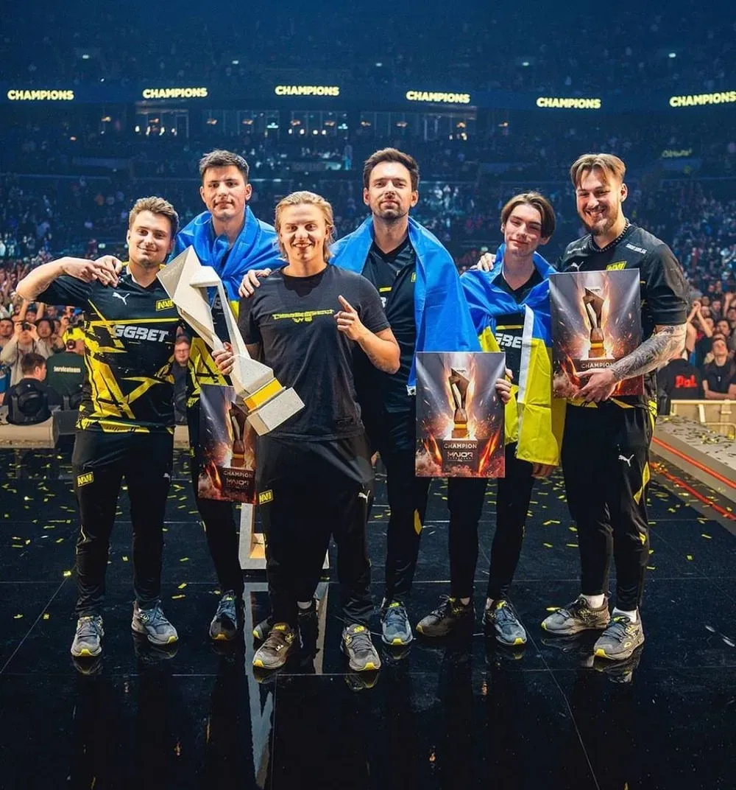

Про команду
NAVI, або Natus Vincere - моя улюблена кіберспортивна команда. Її назва означає «Народжені перемагати». Я вболіваю за NAVI у Counter-Strike 2 та люблю дивитися їхні матчі.

Чому мені подобається NAVI
- Злагоджена командна гра та цікаві тактики.
- Напружені матчі й боротьба до останнього раунду.
- Яскраві моменти, які хочеться переглядати ще раз.
Важлива перемога
31 березня 2024 року NAVI виграли PGL Major Copenhagen з CS2. У фіналі команда перемогла FaZe Clan із рахунком 2:1. Це одна з найяскравіших перемог NAVI!
